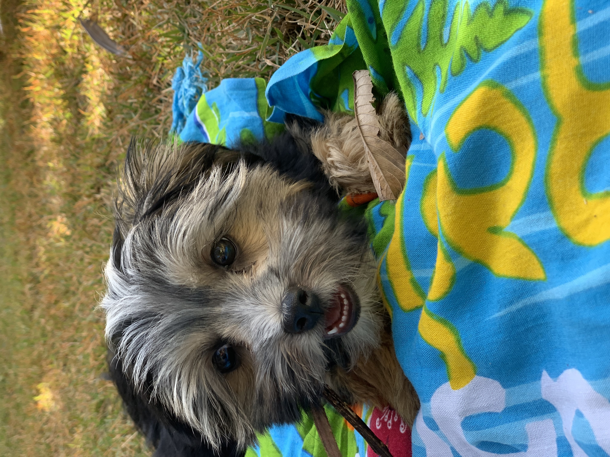
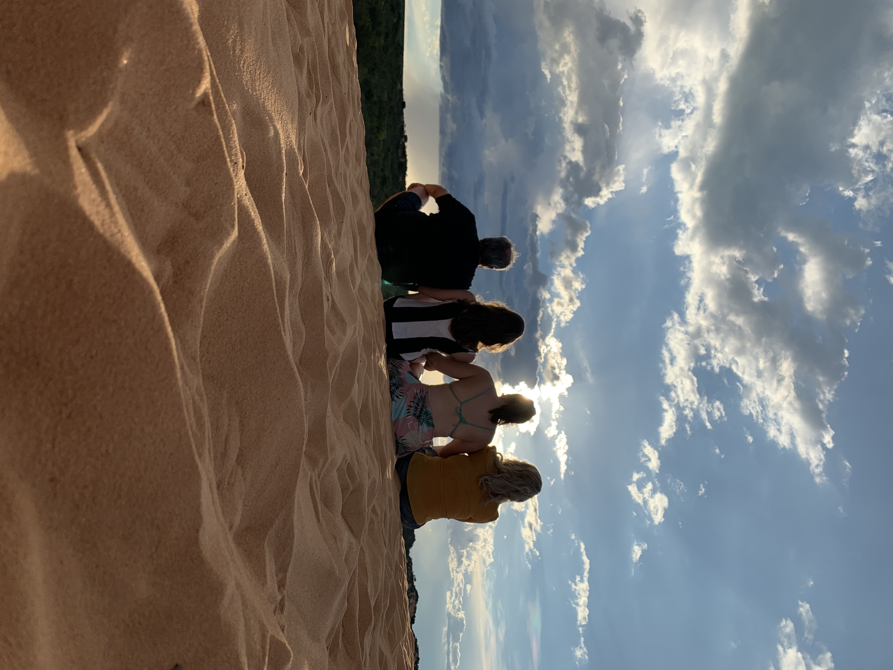
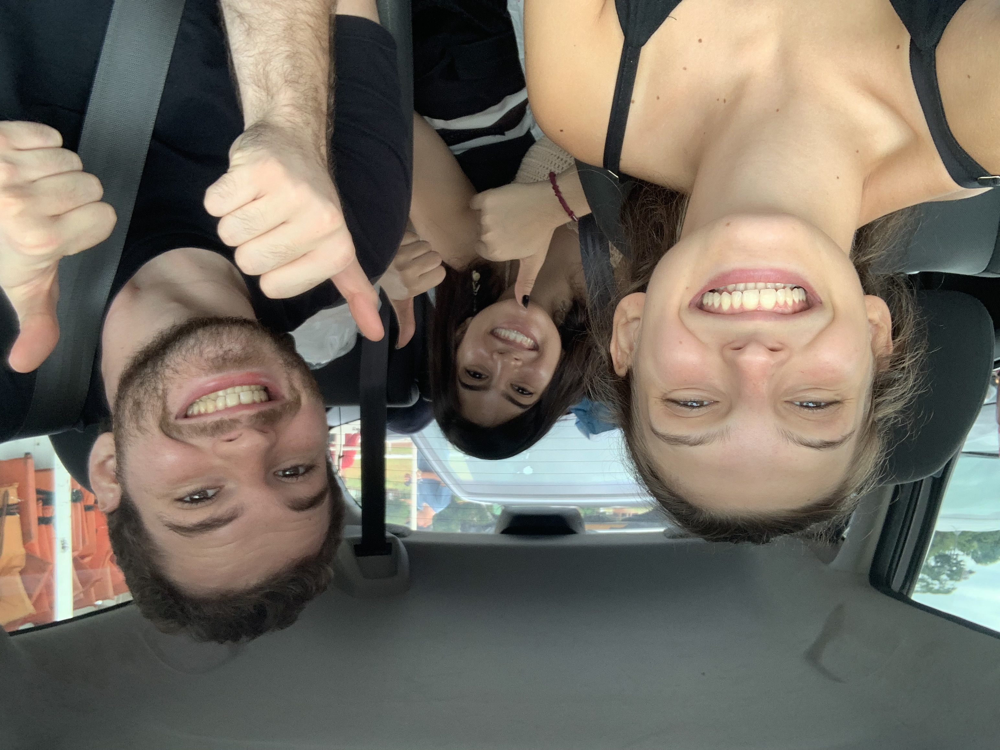
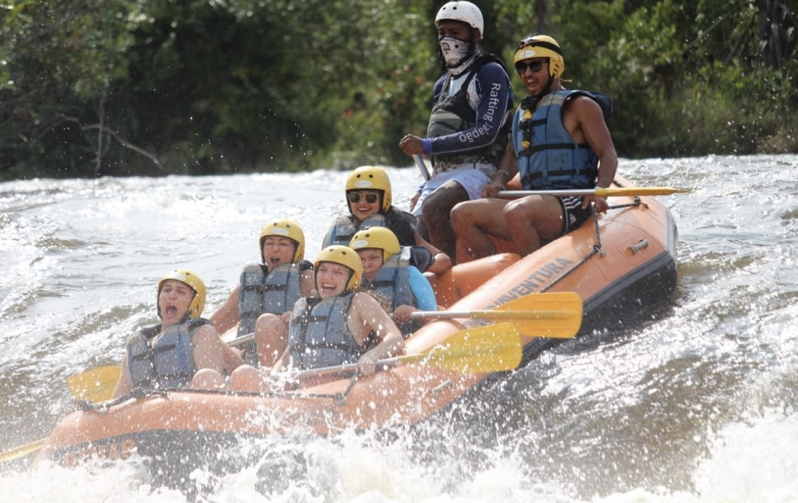
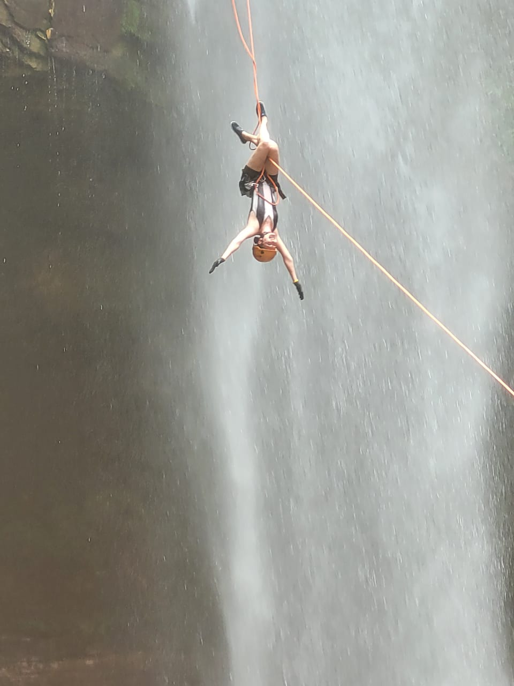
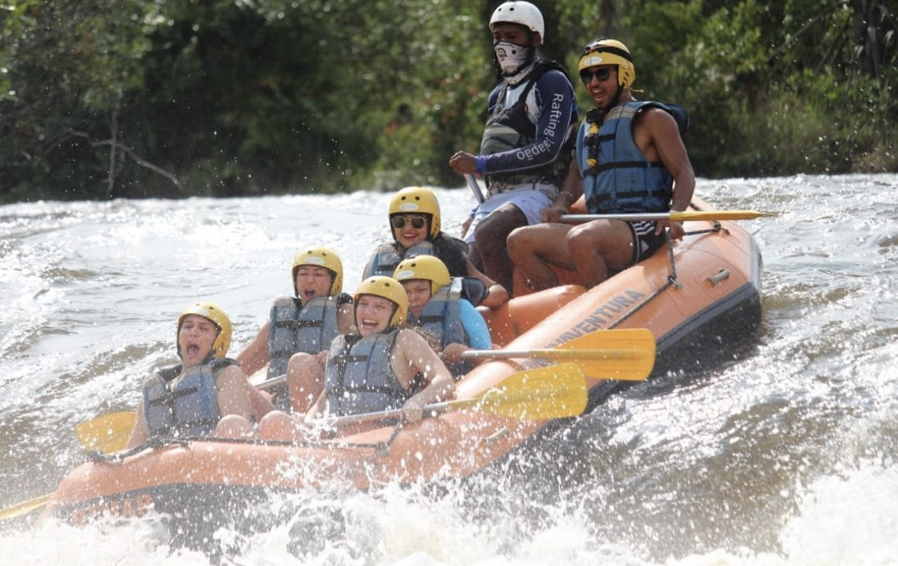
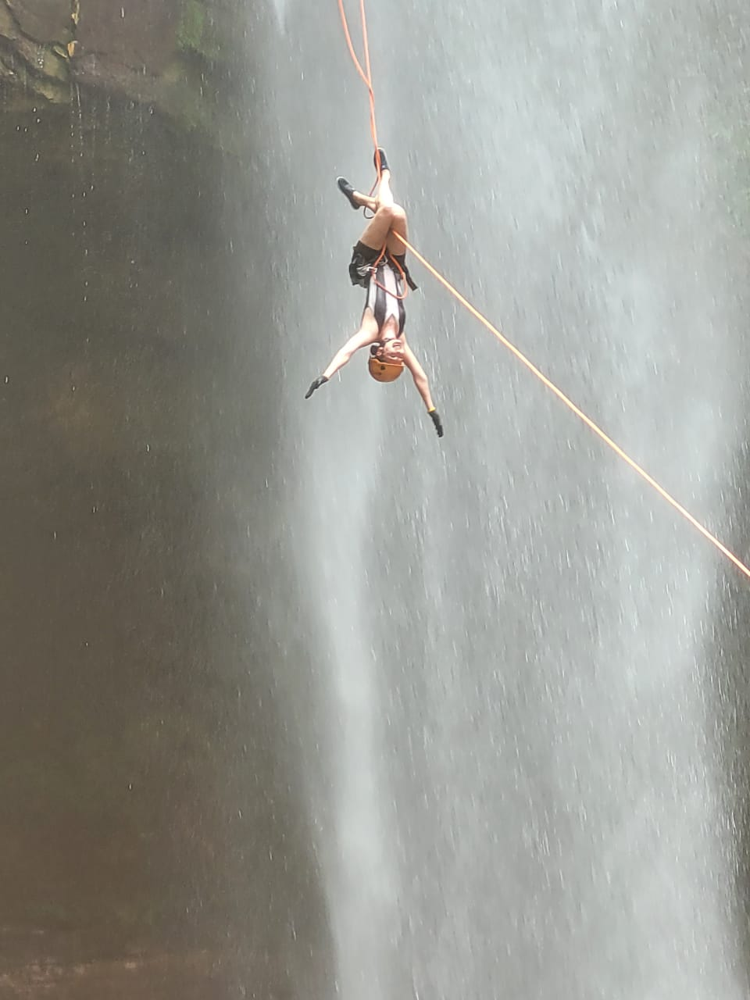
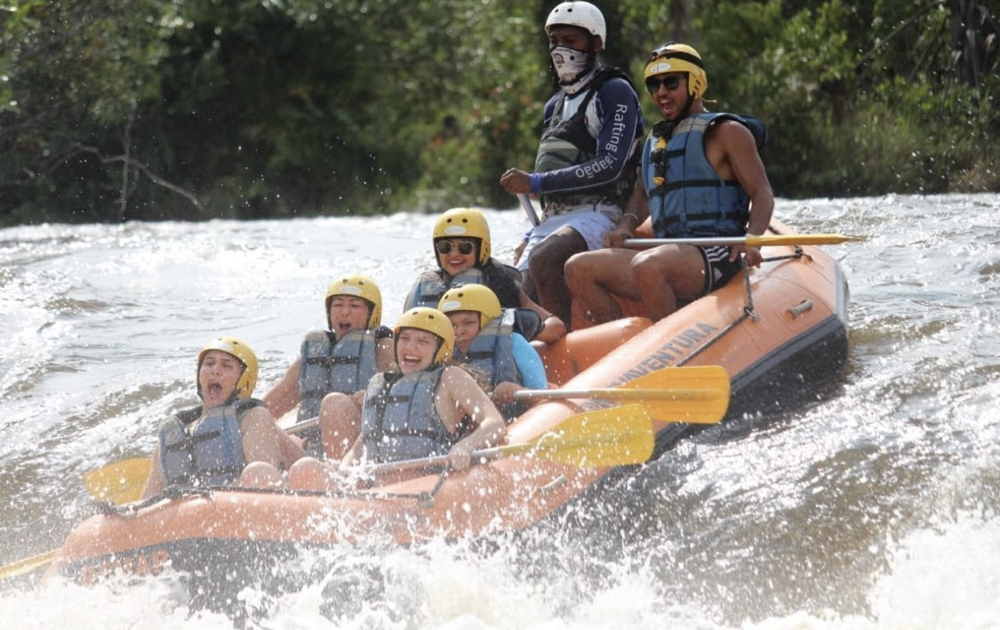
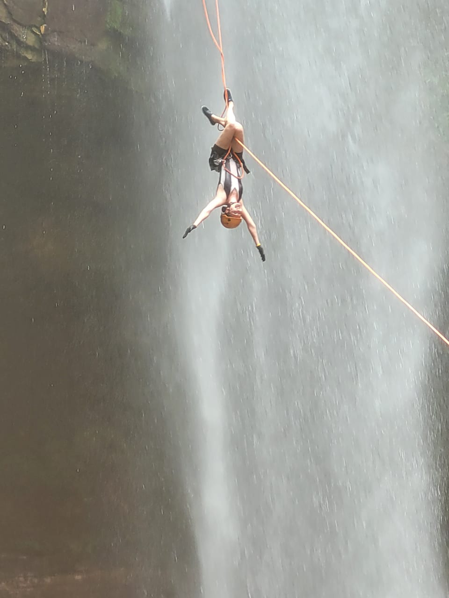

Photodump of the things that gives me joy:
   



I'm a Computer Science student, since 2018.
My very first contact with programming was at college. Not very common, I know, but I just thought it would be a great fit, just because I liked technology in general, math and the flexibility that CS gives once you graduate.
So in 2018, I've entered at UFU, and there I began my journey in CS.
As a great extrovert and curious person, I decided to try all extracurricular activities. I've joined CompPET where I led the Precalculus course for Computer Science freshmen, collaborated in the organization of events like FACOM TechWeek, and participated in the digital inclusion course for the elderly, teaching basic computer concepts.
I've conducted a undergraduate research in the field of Data Mining entitled: Digital financial fraud investigation with Data Mining.
And I also joined Data Girls event team, DG is an extension group from Neuron - Data Science and Artificial Intelligence in order to boost female engagement in the fields of data science, artificial intelligence, technology, and related topics. The events team is responsible for creating an engagement with the local female community through lives, lectures, and workshops.
And after 3 year at UFU I transfered to USP in 2021. And now, here I am!
Oh! Last but not least: I'm doing an internship in Equities Strategy at XP Inc.

